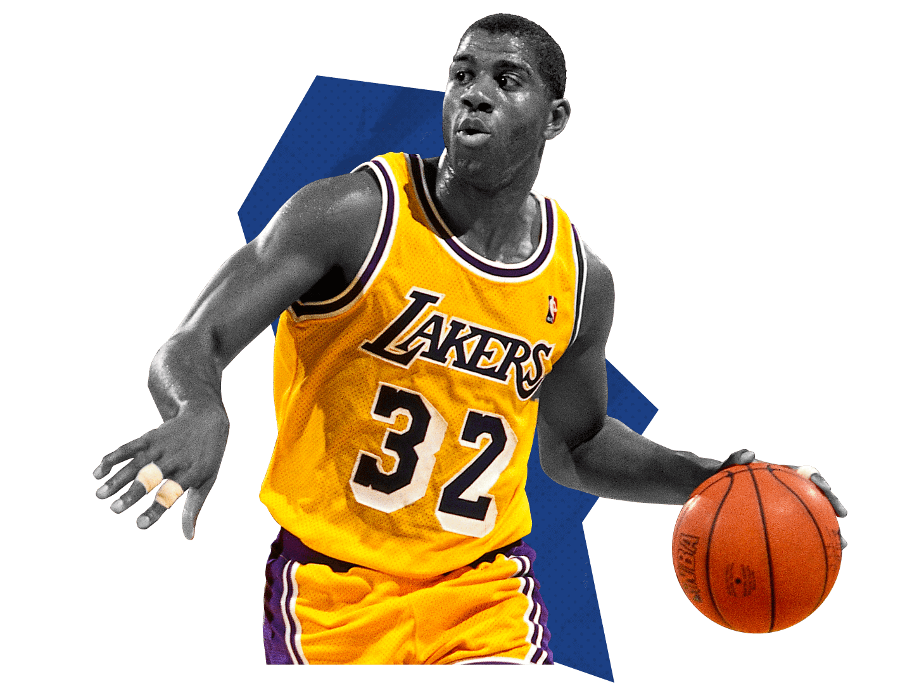

The point guard (PG), also called the one or the point, is one of the five positions in a regulation basketball game. A point guard has perhaps the most specialized role of any position. Point guards are expected to run the team's offense by controlling the ball and making sure that it gets to the right player at the right time. Above all, the point guard must understand and accept their coach's game plan; in this way, the position can be compared to a quarterback in American football or a playmaker in soccer (association football). They must also be able to adapt to what the defense is allowing and must control the pace of the game.
A point guard specializes in certain skills, like other player positions in basketball. Their primary job is to facilitate scoring opportunities for their team, or sometimes for themselves. Lee Rose has described a point guard as a coach on the floor, who can handle and distribute the ball to teammates. This typically involves setting up plays on the court, getting the ball to the teammate in the best position to score, and controlling the tempo of the game. A point guard should know when and how to instigate a fast break and when and how to initiate the more deliberate sets. Point guards are expected to be vocal floor leaders. A point guard needs always to have in mind the times on the shot clock and the game clock, the score, the numbers of remaining timeouts for both teams, etc.
Here are some skills necessary for you to become a good point guard!
In recent years, the sport's shift from a fundamental style of play to a more athletic, scoring-oriented game resulted in the proliferation of so-called combo guards at the point guard position. More explosive and athletic point guards focus on scoring as opposed to play-making, forgoing assists and ball-movement, and often defense, for higher scoring numbers. Young players who are relatively short are now developing the scoring aspects of their skill-sets, whereas previously these players would find it difficult to enter the NBA without true point guard skills. These combo point guards can surprise defenses. Instead of passing after bringing up the ball they quickly drive to the basket or step back for an outside shot. There are some disadvantages to this style of play. A point guard often controls the offense and they also control who gets the ball and who doesn't, as this type of controlling style of play is necessary to control the tempo of a game. Scoring point guards typically look to score first, thus preventing teammates from getting the ball. This can cause other players to become disinvolved in the offense. Even so, combo guards still require above-average passing skill, but not as much as possessed by "pure" point guards (which is what those in the traditional mold of a point guard are referred to).
Some of the most famous point guards are: